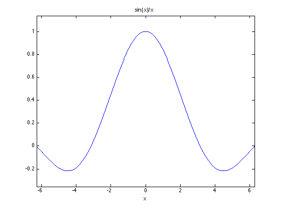

How does limest work?
How might one best compute the limit of a function at a specific point using numerical techniques? Since we need to compute a limit, the function will generally be singular in some fashion at that point. Either a discontinuity exists, or if we tried to evaluate the function, we might encounter a 0/0 problem. In either case, we need to infer the limit purely from function evaluations taken in the vicinity of the limit point. In some cases, we might even find that if we try to evaluate the function too closely to the point in question, there are numerical problems that occur.
Likewise, if we sample our function too far away from the point, the function values will not be a good indicator of the limiting value.
So an adaptive numerical tool must be careful, like Goldilocks in the fairy tale, it must find the middle ground.
The approach taken by limest is to sample the function at a geometric sequence of points approaching the limit point. (See also my derivest tools and residueEst.)
For example, suppose we wish to compute the limit of the function f(x) = sin(x)./x, at x = 0. (The limit is 1.) We cannot evaluate this function at 0, since MATLAB will return a NaN there. If we evaluate the function too far away from 0, then it will not be an accurate indicator of the true limit.
fun = @(x) sin(x)./x; ezplot(fun) format long g fun(0) fun(.000001) fun(.001)
ans =
NaN
ans =
0.999999999999833
ans =
0.999999833333342
 A somewhat worse test case is the function f(x) = exp(x) - 1 - x. Ezplot suggests the limit is 0.5 at x = 0.
fun = @(x) (exp(x) - 1 - x)./x.^2;
ezplot(fun,[-1,1])
grid on
At x = 0, we get NaN.
fun(0)
ans = NaN
If we evaluate the function near the limit point, there are serious numerical problems. Below approximately sqrt(eps), this function returns pure garbage.
x = 10.^(-1:-1:-15)'; [x,fun(x)]
ans =
0.1 0.517091807564771
0.01 0.501670841679489
0.001 0.500166708384577
0.0001 0.500016671409274
1e-05 0.500000696499348
1e-06 0.499962183698476
1e-07 0.494336803055876
1e-08 -0.607747099184471
1e-09 82.7403709368088
1e-10 827.403709626582
1e-11 8274.03708980347
1e-12 88900582.3410317
1e-13 -7992778373.59144
1e-14 -79927783735.9112
1e-15 110223024625156
Limest solves this problem by choosing some offset, dx, from x0. Pick some small offset from the limit point, say 1e-8. Now, evaluate the function at a sequence of points:
x0 + dx, x0 + k*dx, x0 + k^2*dx, x0 + k^3*dx, ...
The default in limest is to use the geometric factor of k = 4.
x0 = 0; dx = 1e-8; k = 4; delta = dx*k.^[-10:15]'
delta =
9.5367431640625e-15
3.814697265625e-14
1.52587890625e-13
6.103515625e-13
2.44140625e-12
9.765625e-12
3.90625e-11
1.5625e-10
6.25e-10
2.5e-09
1e-08
4e-08
1.6e-07
6.4e-07
2.56e-06
1.024e-05
4.096e-05
0.00016384
0.00065536
0.00262144
0.01048576
0.04194304
0.16777216
0.67108864
2.68435456
10.73741824
Now, evaluate the function at each of these points, x0 + delta
fun = @(x) (exp(x) - 1 - x)./x.^2; fun_of_x = fun(x0+delta); [delta,fun_of_x]
ans =
9.5367431640625e-15 122868749999.998
3.814697265625e-14 30717187499.9994
1.52587890625e-13 -1857446289.06264
6.103515625e-13 131684875.488247
2.44140625e-12 -4331684.1125574
9.765625e-12 -1082921.02813935
3.90625e-11 20308.0475324997
1.5625e-10 -4017.93513460437
6.25e-10 132.384593565068
2.5e-09 -2.43098839673788
1e-08 -0.607747099184471
4e-08 0.541952615594605
1.6e-07 0.499780083853781
6.4e-07 0.50007897264343
2.56e-06 0.499984288251391
1.024e-05 0.500000851218376
4.096e-05 0.500006844844694
0.00016384 0.50002731050272
0.00065536 0.500109244595775
0.00262144 0.500437193156052
0.01048576 0.501752217589173
0.04194304 0.507064426657616
0.16777216 0.529175319451948
0.67108864 0.63344285370923
2.68435456 1.52161462365596
10.73741824 399.292392213823
Use a polynomial to fit a subsequence of points. Polyfit would do in a pinch, although more efficient methods are employed in practice. Note that if we look at the points that are very close to z0, then the polynomial may have strange coefficients.
To compute the limit, we are really only interested in the value of the constant term for this polynomial model. Essentially, this is the extrapolated prediction of the limiting value of our product extrapolated down to delta = 0. In effect, this process is highly related to the idea of Richardson extrapolation , except that we do not use a polynomial interpolant to derive the necessary coefficients. The use of a regression polynomial provides the error estimates from limest.
P = polyfit(delta(1:4),fun_of_x(1:4),2)
P =
1.26830908463711e+36 -9.41559254138715e+23 102784215715.195
Our estimate of the limit at x = 0 is just P1(end), the constant term in the polynomial. Recall that the true limit for ths function was 0.5. This estimate is a poor one.
P(end)
ans =
102784215715.195
A nice feature of this sequence of points, is we can re-use the function values for the points, adding one more to the end of the sequence, and dropping the first one in our call to polyfit. (By the way, limest carefully scales its problems to avoid the problems that polyfit would have seen. The actual code does not call polyfit anyway. For this example, I'll just turn off those warning messages.)
warning('off','MATLAB:polyfit:RepeatedPointsOrRescale') P = zeros(23,3); for i = 2:23 P(i,:) = polyfit(delta(i:i+3),fun_of_x(i:i+3),2); end P
P =
0 0 0
1.73964236149361e+34 -5.09621201795639e+22 20907400210.698
-6.57631553730906e+31 7.69529260258972e+20 -1255568987.79351
3.00505692815173e+29 -1.40675165291052e+19 91753708.1986385
-6.71190236062665e+26 1.27875217994924e+17 -3614068.6586673
-9.4990833950136e+24 7.14220588600797e+15 -759299.095081526
1.04188714046047e+22 -30971161588071.8 12448.979532125
-1.37785872691531e+20 1654680714319.14 -2791.97050517086
2.88122013179984e+17 -13819800588.0643 93.085996068978
-456180813797903 89403838.2743891 -2.13468277075317
-9264964688531.65 7118379.81187322 -0.267173798691355
22100106854.8417 -68096.1960063015 0.529708609951636
-5517277.86172314 67.5795567367358 0.499885550415498
155267.272474548 -7.36018231272769 0.500048373377069
-2126.20836704672 0.587163326012658 0.499988101779456
-6.8596909037101 0.172097785181083 0.49999939995763
0.0512616218594046 0.166636188126643 0.500000014200183
0.04186392442111 0.166665324579313 0.500000002022359
0.0421156754180716 0.166662478241848 0.500000004949546
0.0435030810610506 0.166597904348441 0.500000323876313
0.0497270418428591 0.165439254718907 0.500023205364048
0.0913430121766019 0.134458010136504 0.502467086279486
4.68115184308082 -13.5267488831478 4.8013380041388
See how, as we move along this sequence using a sliding window of 4 points, the constant terms will approach 0.5. Then at some point, we move just too far away from the pole, and our extrapolated estimate of the limit becomes poor again.
[delta(1:23),P(:,end)]
ans =
9.5367431640625e-15 0
3.814697265625e-14 20907400210.698
1.52587890625e-13 -1255568987.79351
6.103515625e-13 91753708.1986385
2.44140625e-12 -3614068.6586673
9.765625e-12 -759299.095081526
3.90625e-11 12448.979532125
1.5625e-10 -2791.97050517086
6.25e-10 93.085996068978
2.5e-09 -2.13468277075317
1e-08 -0.267173798691355
4e-08 0.529708609951636
1.6e-07 0.499885550415498
6.4e-07 0.500048373377069
2.56e-06 0.499988101779456
1.024e-05 0.49999939995763
4.096e-05 0.500000014200183
0.00016384 0.500000002022359
0.00065536 0.500000004949546
0.00262144 0.500000323876313
0.01048576 0.500023205364048
0.04194304 0.502467086279486
0.16777216 4.8013380041388
The trick is to learn from Goldilocks. Choose a prediction of the limit for some model that is not too close to the limit point, nor too far away. The choice is made by a simple set of rules. First, discard any predictions of the limit that are either NaN or inf. Then trim off a few more predictions, leaving only those predictions in the middle. Next, each prediction is made from a polynomial model with ONE more data point than coefficients to estimate. This yields an estimate of the uncertainty in the constant term using standard statistical methodologies. While a 95% confidence limit has no true statistical meaning, since the data is not truly random, we can still use the information.
Limest chooses the model that had the narrowest confidence bounds around the constant term.
[res,errest] = limest(fun,0)
res =
0.499999999681485
errest =
2.20308196660258e-09